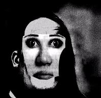

Recuerdo que era un dia 18 de Mayo, que estaba en la terraza de miracle un poco desesperado buscando mi segarro amego. Y pregunte a varias personas, pero todas me dijeron que no. Hasta que te mire a los ojos y dije, esta si joder. Me dirijí hacia la mesa en donde estabais, y amablemente decidi solicitar un cigarro al que desconocia que era el amor de mi vida. No recuerdo absolutamente todo el principio, pero creo que me preguntaste "Como te llamas", a lo que yo respondi Miquel, por?; Y tu pusiste la cara más feliz de ese dia, y empezaste a explicar tu amigo flautista que se llamaba Miquel, el cual le gustabas, pero tu pasabas de el, (bien hecho, se nota que sabias que ibas a conocer al buen Miquel joder, así me gusta.). Tras un buen rato, de tu explicando tu puto amigo bautista, DECIDISTE DARME EL CIGARRO, y el Chusky ese dia estaba activo, y hizo la pregunta: "Como os conocisteis?" (Creo que a nadie le ha preguntado eso en la vida, ese dia el Chusky estaba ON y eso me gustó.) A lo que Claudia, como si se hablase de que estaba en 1 de la ESO, gritó: "Nos conocimos en un hospital psiquiatrico, y mi cara se quedó un poco"

No te voy a mentir que quizás me hecho un poco para atrás, pero dije, bueno, voy a hacer como que no he hecho nada. Pero mi yo de hace 1 año, os hubiese empezado a vacilar no te voy a mentir, pero vamos a pasar esa información por alto okey?. Y bueno, estabamos en la terraza y dijisteis de ir pa la pista y dije bueno okey vamos va. Y fue cuando TU, me empezaste a restregar el culete, y yo dije, pero esta tia una de dos, o esta chorreando, o es tonta. Obviamente era la primera opción, (nada mas paso yo todas las mujeres chorrean, es broma bb.) Y bueno, estuvimos un buen rato bailando y eso, pero yo no me queria liar contigo, porque si me liaba no me ibas a dar el insta, y pues yo queria tu insta. Y fue la jugada quizás mas inteligente de mi vida entera, y de la cual me ha salido mas rentable. Mis amigos me dijeron maricon y esas cosas pero con que venian los insultos de parte del velas y del Mate (Virginidad Maxima), pues no les di importancia. Y bueno, así nos conocimos tu y yo, en la galeria, habrán videos y fotos de ese dia.